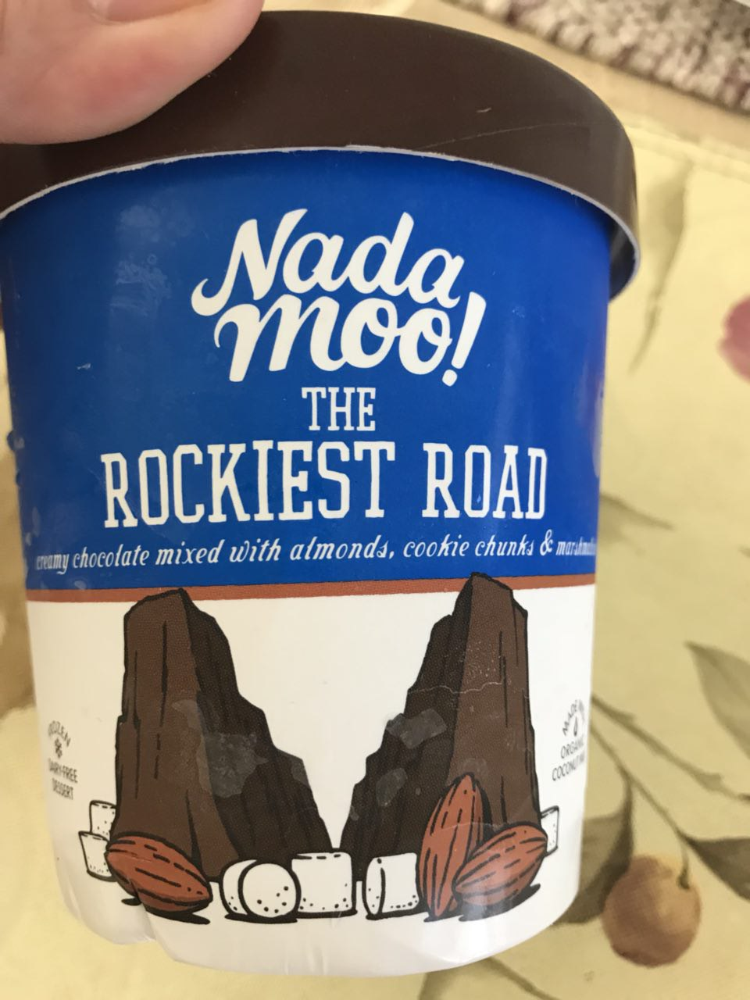

Day 5: The Rockiest Road
Challenges are what make life interesting and overcoming them is what makes life meaningful.
-Joshua Marine
I think that it may be rewarding to overcome challenges, but I don't think that's all there is to making life meaningful.
God's Plan didn't promise a life without challenges and facing and overcoming challenges is something I think that makes us human. Every single human in the history of time has faced a challenge. It's something we all have in common. No doubt.
I personally think resilience is within every one of us. We just have to choose whether or not we want to persist and persevere.
Yes... this is ANOTHER KNEE SURGERY; but who am I to back down now???
At this point, if I've learned anything it's that I need to stop wasting time complaining, whining, and feeling sorry / sad / confused / lonely in the worst way about the injury.
It's out of my control and if watching THIS IS US 👨👩👧👦 has taught me anything, it's that
Life will give you lemons. But there's no lemon so sour that you can't make something resembling lemonade.
-THIS IS US
I was thoroughly delighted to have the lil sis entertain me today with vegan ice cream 🍦😋
Even though she's the type of person who never responds to texts WHEN SHE HAS HER IPHONE ATTACHED TO HER WRIST WITH ONE OF THEM NEWFANGLED APPLE WATCHES 🤯😩😤😑
The only thing closer would be a phone connected to your brain...
(Yeah, I'm going to rant about that because this is my blog. So if you're reading this Auds, answer your texts)

and a throwback Taylor Swift jam sesh 🎶

This is what you get for uncovering my webcam 😂
(If you can guess this song, I'll give you a prize 🏆)
Updates:
- Slept better than Day 4, (thank you benadryl)
- Increased mobility and ambulation
- Can weightbear completely on surgical leg and balance (full extension ONLY)
- Pain when standing / walking for some time
- Walked (slowly) for 10 minutes today
🙌
- Ice cream... VEGAN ICE CREAM
- Music and the ability to jam even when I'm crippled
- Homemade blueberry muffins
- Guatemala Phase 1 meeting was a success
🙏
- Continued prayer for the Guatemala high school team
- Rachel and IJM in Bolivia
- Aud's health
- First follow-up knee appointment tomorrow